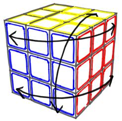

Comutadores e Conjugados

Somente usando comutadores e conjugados é possível resolver qualquer quebra-cabeças similar ao cubo mágico.
Seja qual for a estratégia ou método usado na solução, sempre ocorre a necessidade do uso de comutadores e conjugados, principalmente no final, quando há muitas restrições de movimentos.
Nessa página são apresentados os conceitos fundamentais desses dois tipos de movimentos.
Para melhor entender e assim construir seus próprios comutadores e conjugados é aconselhável que você aprenda primeiro a resolver o cubo de Rubik de acordo com o guia apresentado em Cubo 3x3x3.
Comutadores
Um comutador é simplesmente a sobreposição de dois movimentos do tipo "vai e volta" com camadas que se cruzam em certo ponto.
Um movimento de "vai e volta" consiste numa seqüência de movimentos que depois é desfeita seguindo exatamente o sentido contrário. Por exemplo, R R' é um movimento de "vai e volta". Outro exemplo seria R U U' R'. Note que o "vai e volta" é sempre composto por um número par de movimentos.
Podemos dizer que a primeira metade ("vai") é representada por uma letra, por exemplo, A. Então a outra metade é simplesmente representada por A-1, ou seja, o inverso de A. Assim, no último exemplo de "vai e volta" R U corresponderia a A e U' R' seria A-1.
Fazendo a sobreposição de dois movimentos do tipo "vai e volta" temos um comutador: A B A-1 B-1. Nesse caso A A-1 e B B-1 são movimentos de "vai e volta" diferentes. Note que é preciso que esses movimentos diferentes possuam camadas que se cruzam em certo ponto, eles não podem ocorrer entre camadas paralelas como, por exemplo, U U' e D D' porque nada seria mudado no cubo.
Veja abaixo alguns exemplos de comutadores para o cubo 3x3x3:
Esta sobreposição de movimentos de "vai e volta" na verdade é resultado da intersecção de dois movimentos escondidos de "vai e volta". Você pode ver os detalhes de como este comutador emerge a partir desses movimentos escondidos de "vai e volta" no capítulo 9 do guia para resolver o Cubo mágico sem decoreba. No mesmo capítulo você pode aprender o básico sobre como projetar seus próprios comutadores. Todos os exemplos desta página foram projetados partindo da mesma lógica básica.
Conjugados
Um conjugado nada mais é do que qualquer movimento "englobado" por um movimento do tipo "vai e volta". Considere que o "vai e volta" é representado por A A-1 enquanto Z representa um movimento qualquer, que pode ser um ou mais comutadores ou até mesmo outro conjugado. Então o conjugado de A A-1 com Z será A Z A-1.
Note que o conjugado nada mais é que um "reposicionamento" feito antes de uma seqüência de movimentos e que ao final dessa seqüência é desfeito.
O conjugado é muito útil quando se quer aplicar um comutador mas as peças não estão nas posições inicias corretas.
Veja abaixo um exemplo de uso de conjugado feito com um comutador que permuta 3 cantos. Diferente do exemplo 1, acima, nesse caso é possível permutar 3 cantos sem alterar suas orientações.
Conclui-se, assim, que os comutadores, vistos no início, são sobreposições de conjugados vazios. O movimento de "vai e volta" nada mais é do que um conjugado vazio, isto é, não há nada dentro dele. Podemos escrever que o movimento de "vai e volta", U U' equivale a U () U', onde () representa um vazio. Fazendo, portanto, a sobreposição de dois conjugados deste tipo temos um comutador, como visto no início desta página.
Por exemplo, veja a sobreposição de (L D' L') () (L D L') com U () U':
(L D' L') ( ) (L D L')
U ( ) U'
_________________________
(L D' L') (U) (L D L') U'
Chegamos ao mesmo comutador do exemplo 1.